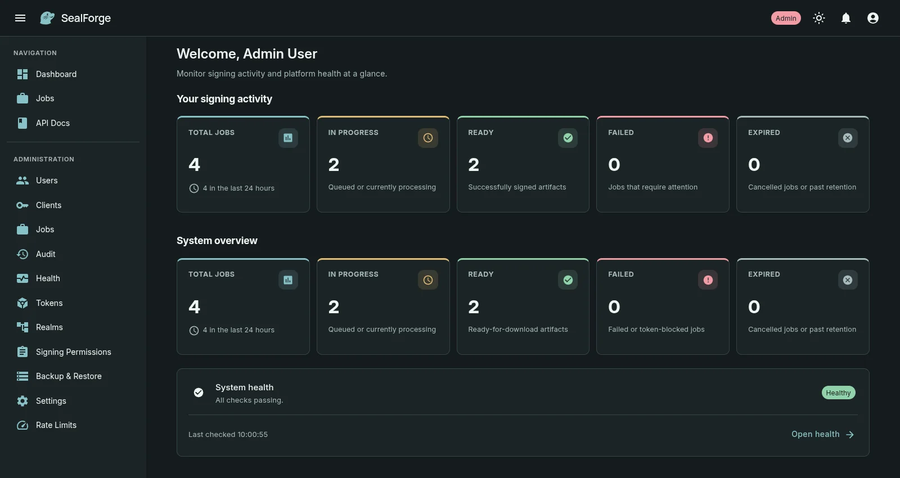

Anahtarınız token'ınızda kalır
Özel imzalama anahtarınız token'ınızda kalır. SealForge, imzalama işlemini kendi altyapınızda bu token üzerinden gerçekleştirir.
SealForge ile tanışın
SealForge, ekibinizin ve derleme hatlarınızın kodu kendi altyapınızda imzalamasına yardımcı olur. Her sertifikayı kimin kullanacağına siz karar verir, işleri gönderimden doğrulamaya kadar takip edersiniz.
Hızlı başlangıç
SealForge, Linux sunucunuzda Docker ve uyumlu bir imzalama token'ı ile çalışır.
Docker Engine çalışan bir Linux sunucusu ve imzalama token'ınıza erişim hazırlayın.
Web uygulamasını, imzalama işleyicisini ve veritabanını kendi altyapınızda çalıştırın.
Token'ınızı kaydedin, imzalama izni verin ve bir dosya gönderin.
Özel imzalama anahtarınız token'ınızda kalır. SealForge, imzalama işlemini kendi altyapınızda bu token üzerinden gerçekleştirir.
Kişilere ve derleme hatlarına belirli sertifikaları kullanma izni verebilirsiniz. Yönetim ve imzalama yetkileri birbirinden ayrıdır.
İşlerin ilerleyişini ve olay kayıtlarını takip edebilirsiniz. Dosya, ancak imzalama ve doğrulama başarıyla tamamlandığında hazır olur.
SealForge'un içinden
İmzalama işlerini ve sistem durumunu kontrol panelinden izleyebilirsiniz. Görseller örnek veriler içerir.


İmzalama süreci
İşleri tarayıcınızdan gönderip takip edebilir veya gönderimi ve sonuç almayı API ile otomatikleştirebilirsiniz.
Sertifikanız için tanımlanan imzalama iznini seçin.
Bir imzalama işi oluşturmak için dosyanızı yükleyin.
SealForge erişimi kontrol eder; dosyanızı imzalar, zaman damgası ekler ve doğrular.
API işlerinde doğrulanmış dosyayı aynı API istemcisiyle indirin.
Başlamadan önce
Bir Linux sunucusuna, uyumlu bir imzalama token'ına ve sertifikaya ihtiyacınız olacak. Kurulum rehberi bunları hazırlamanıza yardımcı olur.
Mimariyi inceleyebilir, ekibinizin imzalama sürecini planlayabilir veya SealForge'a nasıl katkıda bulunabileceğinizi öğrenebilirsiniz.